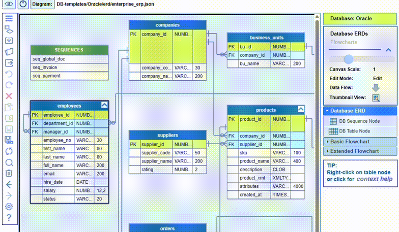

When a diagram is larger than the browser viewable area, the Thumbnail View dialog, invokable from the top right of the screen, helps to navigate the entire diagram:

To search for a particular node or nodes in large diagrams, use the Search dialog accessed from the
top toolbar:

It allows to find a single or multiple nodes by using a
full or partial name, or by matching the appropriate text or pattern in the node content text.
